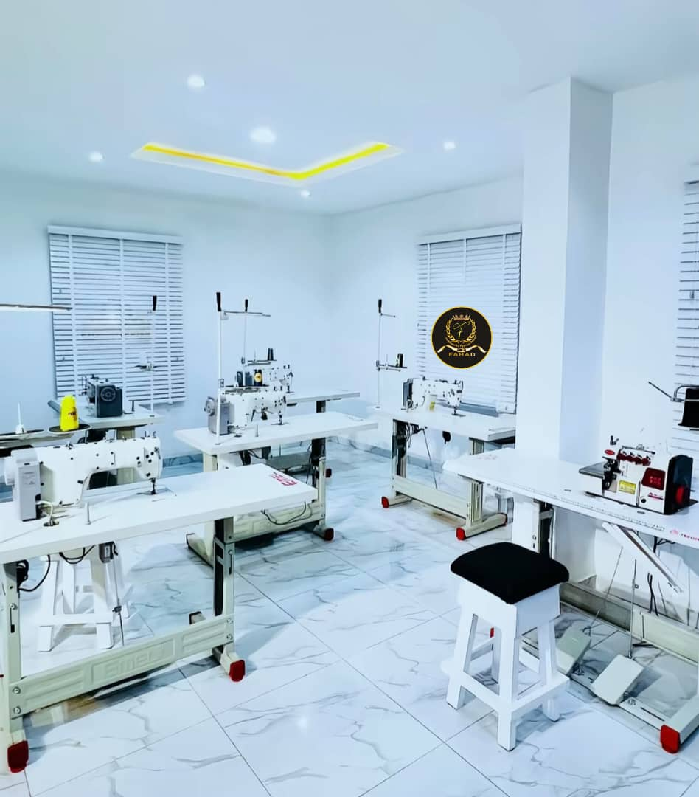

Sarkin Wanka Fashion Design
L'art de la couture traditionnelle et moderne redéfini.
Découvrir la collectionÀ Propos de SARKIN WANKA
Fondée par la passion de l'excellence et du détail, Sarkin Wanka Fashion Design est bien plus qu'un atelier de couture. C'est un lieu où le tissu rencontre l'imagination pour créer des pièces uniques qui racontent une histoire.
Notre mission est de sublimer votre élégance à travers des coupes parfaites et des finitions soignées.
